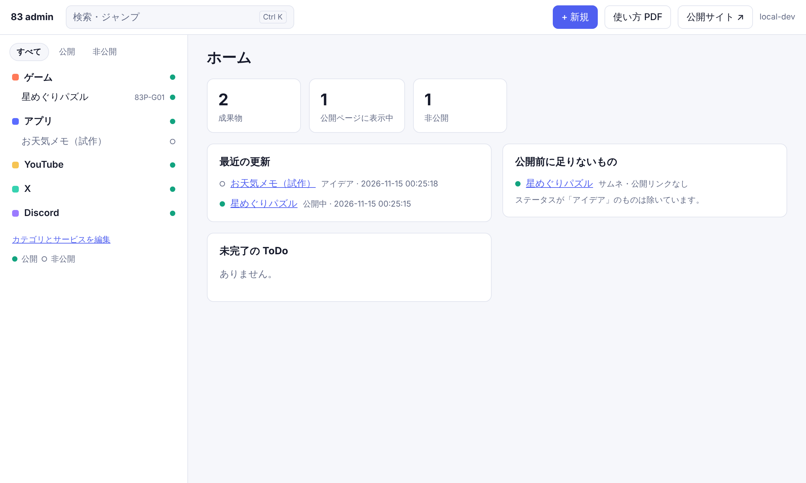
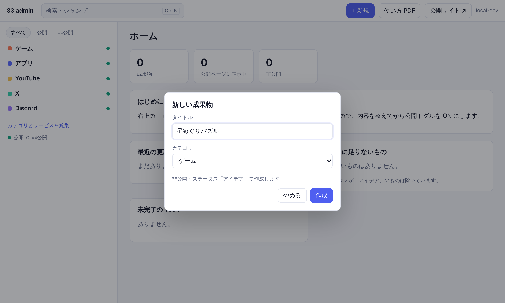
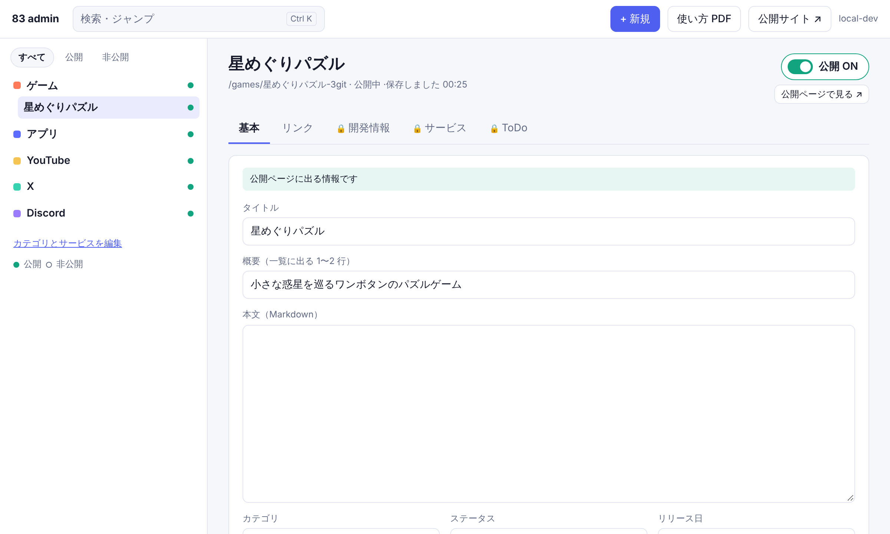

作品を登録して公開するまで ・ 2026年11月15日版
作品はいつも次の順で公開します。入力は自動で保存されるので、保存ボタンはありません。
この手順書は、管理画面の上部バーにある「使い方 PDF」からいつでも開けます。
ツリーの丸は公開状態を表します。● 緑 が公開、○ 空洞 が非公開です。スマホでは左上の ☰ でツリーを開きます。

ホーム画面。件数、公開前に足りないもの、未完了の ToDo が並びます

「+ 新規」を押すと出る作成画面
必須はタイトルとカテゴリだけです。空欄のままでも公開できます。
| 項目 | 意味 | 書き方の例 |
|---|---|---|
| タイトル | 作品名。星表と星のラベルに出る | 星めぐりパズル |
| 概要 | 星表に出る 1〜2 行の説明 | 小さな惑星を巡るワンボタンのパズルゲーム |
| 本文 | 詳しい説明（Markdown）。今の公開ページではまだ使われていない | 空欄で OK |
| カテゴリ | どの枝に属するか | ゲーム |
| ステータス | 進み具合。公開ページでは「公開中・開発中・アーカイブ」の 3 つにまとめて表示（アイデア・開発中・休止は「開発中」） | 公開中 |
| リリース日 | 公開した日。星表に「2026.11」のように出る | 2026-11-15 |
| 公開ID | 星表の番号。他の作品と同じ番号は使えない | 83P-G01（G=ゲーム、A=アプリなど自由に） |
| slug（URL） | 作品の識別名。作成時に自動で入るので変えなくてよい | star-puzzle |
| 並び順 | 小さい数字ほど前に並ぶ | 10, 20, 30（間を空けると後で入れやすい） |
| 親アイテム | シリーズやチャンネルの下に置きたいとき | YouTube チャンネルの下に個別動画 |
| 大きく見せる | 注目作品。星が大きくなり、星表でも目立つ | 代表作だけチェック |
| サムネ画像 URL | 星表の行に触れたときに浮かぶ画像。画像そのものの URL を貼る | https://img.youtube.com/vi/動画ID/hqdefault.jpg |
| タグ | カンマ区切りのキーワード | Unity, パズル |

編集画面の「基本」タブ。右上のスイッチで公開／非公開を切り替えます
作品のページやストア、動画へのリンクです。「リンク」タブで「+ リンクを追加」を押し、種類・表示名・URL を入れます。
https:// で始まるものだけ保存できます。残りの 3 つのタブは常に非公開です。公開スイッチを ON にしても外には出ません。空欄のままでも公開できます。
| タブ | 何を書くか | 例 |
|---|---|---|
| 開発情報 | リポジトリ・プレビュー・本番の URL、使った技術、開発メモ | https://github.com/sawagit/star-puzzle、Unity 6 / C# |
| サービス | 使っている外部サービスの名前、役割、管理画面の URL | Cloudflare、ホスティング、https://dash.cloudflare.com |
| ToDo | 公開前にやることのチェックリスト | サムネを作る、紹介動画を撮る |
非公開に戻すときは、同じスイッチをもう一度押すだけです。内容は消えません。
| 症状 | 原因と対処 |
|---|---|
| ON にしたのに 公開ページに出ない | カテゴリが非公開です（編集画面に赤いお知らせが出ます）。左下の「カテゴリとサービスを編集」で、そのカテゴリを ON にする |
| 「保存できませんでした」 と赤く出る | 赤い欄の下に理由が出ます。公開ID の重複、https:// 以外の URL、キーやメールらしき文字列がよくある原因です |
| 番号つき（403 など）や 「ネットワークに接続できません でした」と出る | ログインが切れています。ページを再読み込みしてコードでログインし直し、もう一度入力する |
| サムネが表示されない | URL が画像ではなくページの URL になっています。画像を右クリック →「画像アドレスをコピー」したものを貼る |
| 間違えて作った | 編集画面の一番下「このアイテムを削除」。元には戻せません |
ホーム画面の「公開前に足りないもの」には、概要・サムネ・公開リンクがない作品が並びます。公開前の確認に使えます。
カテゴリの色がそのまま星と枝の色になります。初期の色は以前の明るいデザイン用なので、試作と同じ見た目にしたい場合は次のように変えます。
| カテゴリ | 色コード |
|---|---|
| ゲーム（Games） | #FF6F61 |
| アプリ（Apps） | #29C5E6 |
| YouTube | #FF5C8A |
| X | #B9A6FF |
| Discord | #7CE6A4 |
同じ画面で、英語名（枝を通過するときに大きく出る名前）や並び順も変えられます。各カテゴリ右上のスイッチを OFF にすると、その枝ごと公開ページから隠れます。